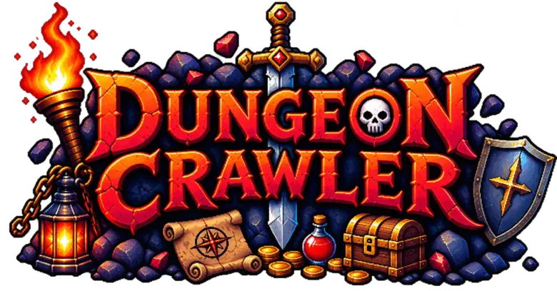

⚔ 던전 크롤러 ⚔이동: 방향키 / WASD · 제자리 대기: . (마침표) · 포션: Q (10턴마다) · 인벤토리: I · 도감: B · 전체 지도: M · 지도 겹쳐 보기: Tab · 칸 클릭: 자동 이동 · 점프: Space + 방향 · 포탈(로비로): P
3D 화면(시험판): V · 앞뒤 W·S · 옆걸음 A·D · 둘러보기: 마우스 또는 ← → · 공격: 클릭 또는 Space · 지도: Tab (작게·크게·끄기)
3D 화면: ▲▼ 앞뒤 · ◀▶ 돌기 · 화면을 끌어 둘러보기 · 공격 버튼(또는 화면을 톡)으로 공격
방향 버튼을 누르고 있거나 화면을 밀면 움직여요. 칸을 누르면 거기까지 자동으로 걸어가요.
적에게 부딪히면 공격, 계단(>)을 밟으면 아래층. 5층마다 보스가 있고, 50층 보스를 잡으면 완료 → 나이트메어(▼)와 골드 던전이 열려요.
바닥의 !는 좋은 장비, ♦는 보석(인벤토리에서 홈에 넣어요), 무지개색 ♦는 룬(나이트메어 50층 보스). 포션(Q)은 10턴마다 무제한. 포탈(P)을 타면 로비로 가고 HP가 다 차요.
로비의 파란 포탈로 떠난 자리에 돌아가요. 던전 입구는 1층부터, 마을 가운데 웨이포인트(◎)는 밟아 둔 층부터 (일반 던전·나이트메어·헬 모두 10층마다).
개인정보처리방침 장비 상자 확률